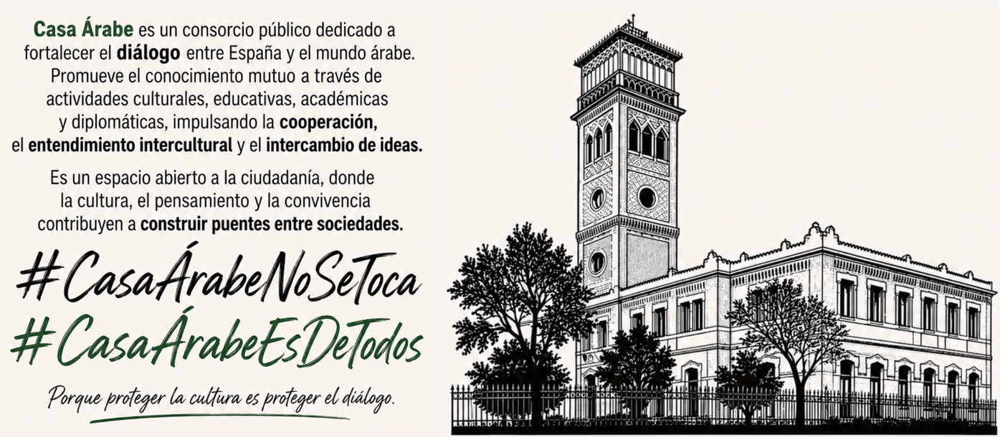

Actualizado por última vez:

DEFENDAMOS CASA ÁRABE
Este sitio web contiene toda la información relevante sobre la situación de la sede de Casa Árabe en Madrid, que el alcalde José Luis Martínez-Almeida pidió desalojar el .
El objetivo es que quien lo visite pueda hacerse una idea de lo que está pasando y conocer los recursos que tiene a su disposición en caso de querer ayudar o saber más.